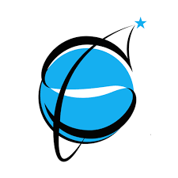

SESSION 6
Innovative Technology
AI in SMEs · Blockchain · Network Platforms

1 · AI IN SMEs
Three ways SMEs adopt AI
Off-the-shelf / Cloud AI
SaaS on cloud platforms, low upfront cost. Ex: support chatbots, marketing tools, AI invoice recognition.
Embedded AI
AI features built into third-party core software. Ex: predictive sales analytics in CRMs, ad-optimization on Google/Meta.
Custom AI Solutions
Bespoke algorithms for unique operations. Trade-off: expensive, needs dedicated data infra and ML engineers — rarest path for SMEs.
1 · AI IN SMEs
Strategic drivers vs. adoption barriers
- Cost & productivity: automating repetitive admin / customer-service tasks
- Decision support: forecasting demand, managing supply-chain risk
- Hyper-personalized customer experience
- Skills gap: lack of in-house technical expertise
- Data quality: fragmented, unstructured data
- Financial constraints: unclear short-term ROI
- Legal & security risk: privacy, compliance
Vietnam, 2025 (Deloitte Access Economics & Meta survey)
93% of Vietnamese SMEs use ≥1 AI tool — highest of 6 surveyed APAC markets · 92% report higher productivity · 89% report lower operating cost.2 · BLOCKCHAIN
What is Blockchain, and why supply chains need it
Core idea
A distributed, decentralized ledger: data is grouped into blocks linked by cryptographic hashes, each block referencing the one before it. Transparency (visible to authorized members), immutability (recorded data cannot be altered), smart contracts (automatic execution once conditions are met).
Problem it solves
Information is fragmented across stakeholders (Farm → Logistics → Warehouse → Supermarket); manual traceability is slow and costly. Blockchain does not replace legacy systems — it acts as a trusted verification layer connecting them.
2 · BLOCKCHAIN
Case study: food traceability, Farm to Table
| Stage | What happens on-chain |
|---|---|
| Input (Farm) | QR code / RFID chip + initial quality certification recorded |
| Transport (Logistics) | IoT sensors push real-time temperature / humidity data to the chain |
| Handoff (Smart contract) | Automated verification of storage conditions + instant payment release |
| Output (Consumer) | Scan the QR code to see the full batch history |
Impact: traceability time drops from several days of manual paperwork to seconds of a QR scan.
2 · BLOCKCHAIN
Six characteristics of Blockchain as a data platform
1. Transparency
Data visible to network members; public chains visible to anyone.
2. Immutability
Data cannot be deleted or edited → a public audit trail.
3. Consistency
Every node holds the same ledger — one single source of truth.
4. Equal rights
No privileged intermediary; equal read/write access across nodes.
5. Availability
Each node keeps a full copy; the system runs as long as one node survives.
6. Trade-offs
Low privacy (public data) and low throughput (consensus is slow).
Secondary source: "Đặc tính chính của Blockchain", Nhóm 10 (classmates, Đại học Sư phạm Hà Nội, môn Cơ sở dữ liệu tiên tiến) — not our group’s work, cited to go beyond the lecture slide.
2 · BLOCKCHAIN · GROUP ACTIVITY
Group Discussion & Scenario Exercise (20 mins)
Scenario: propose a Blockchain application for a different industry (e.g., Anti-counterfeiting in Luxury Fashion, Health Insurance, Real Estate, or Pharmaceutical Traceability). Group presentations: 5–10 minutes per group.
Our group's answer: Health Insurance
Worked out on the next slide.2 · BLOCKCHAIN · GROUP ACTIVITY
Worked answer: Blockchain for Health Insurance
The problem today
- Patient records scattered across hospitals, clinics, insurers — no shared source of truth
- Claim fraud and duplicate billing are hard to detect across fragmented systems
- Patients cannot easily prove their treatment history when switching provider or insurer
The Blockchain application
- Transparency + Consistency: hospital, insurer, and patient see the same claim record on one shared ledger
- Immutability: a recorded treatment history / claim cannot be quietly altered — strong fraud deterrent
- Smart contracts: claim auto-approved and paid once discharge + policy conditions verify on-chain
- Hybrid on/off-chain: sensitive medical data stays off-chain; only a hash/proof goes on-chain — keeps privacy while proving the record is untampered
3 · NETWORK PLATFORMS
How network platforms create value for SMEs
Network effects
A growing user base lowers search and transaction costs for every participating firm.
Global market reach
E-commerce platforms remove geographic barriers, aggregate demand, streamline supply chains.
Functional outsourcing
SMEs outsource payments, logistics, marketing, and "security-by-design" cybersecurity to the platform.
Core concept: a 5–10-person SME can sell globally or use AI without building costly internal IT — via a pay-as-you-go network platform.